Design & prototyping
Created CAD models and physical prototypes to assess component geometry, assembly fit and manufacturability.
Project 04 / Independent & student engineering
From digital design to field validation: my independent rocket, Key Lime Pie, and my collaborative work on Banana Split with Sun Devil Rocketry.
I earned both Level 1 and Level 2 high-power rocketry certifications through the design, fabrication and flight testing of my personal project.

01 / Independent project
A personal engineering project spanning concept development, CAD, fabrication, assembly, electronics integration and field testing.
I took responsibility for the complete rocket development process, from initial design to final assembly and flight evaluation. I used SolidWorks for component modeling and OpenRocket for simulation, then translated the digital models into physical hardware.
The project demonstrates my ability to manage mechanical interfaces, evaluate fit and manufacturability, and integrate multiple subsystems into a complete assembly.
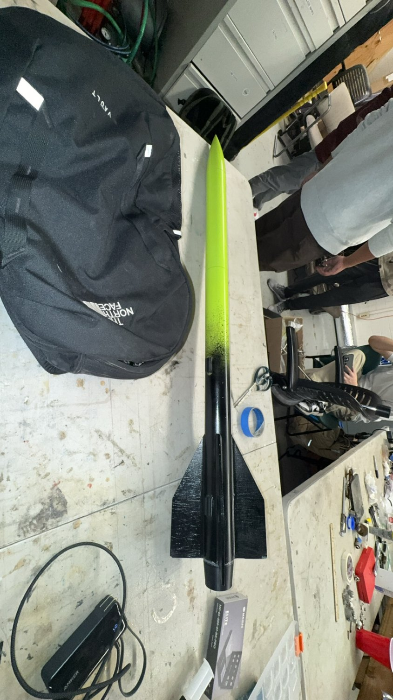
Created CAD models and physical prototypes to assess component geometry, assembly fit and manufacturability.
Applied hands-on fabrication, additive manufacturing and assembly skills while documenting the development process.
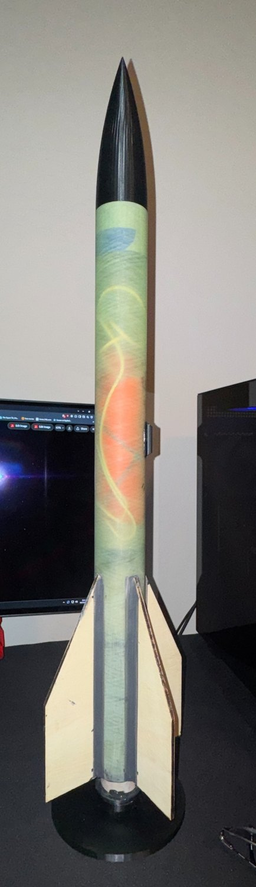
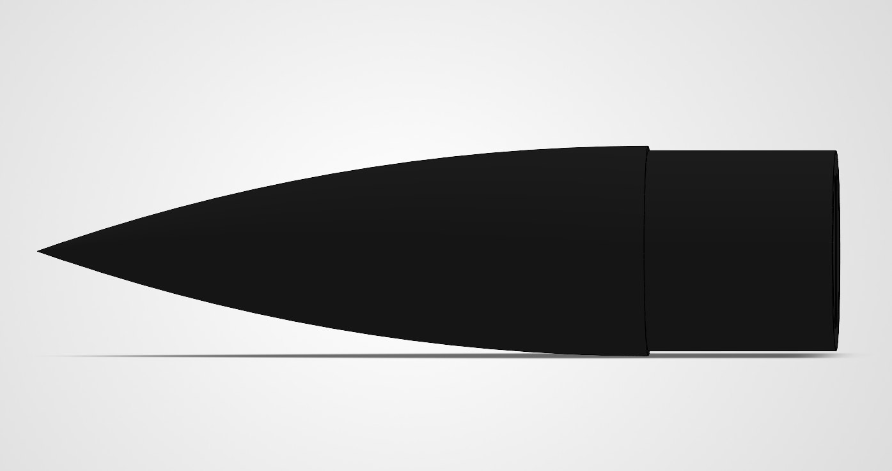
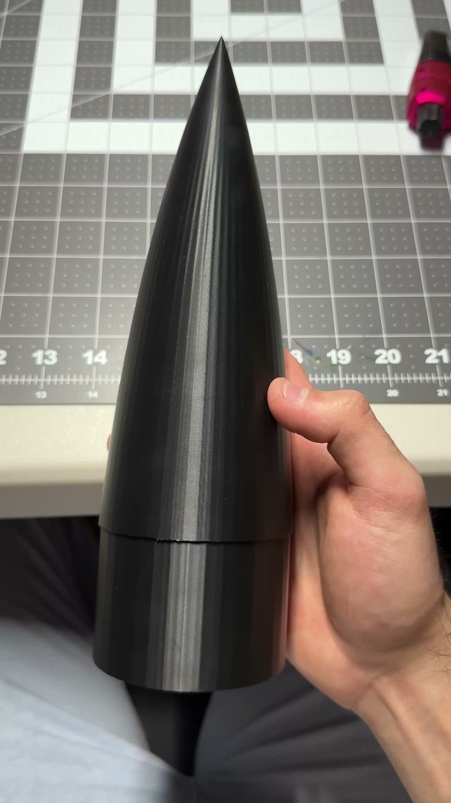
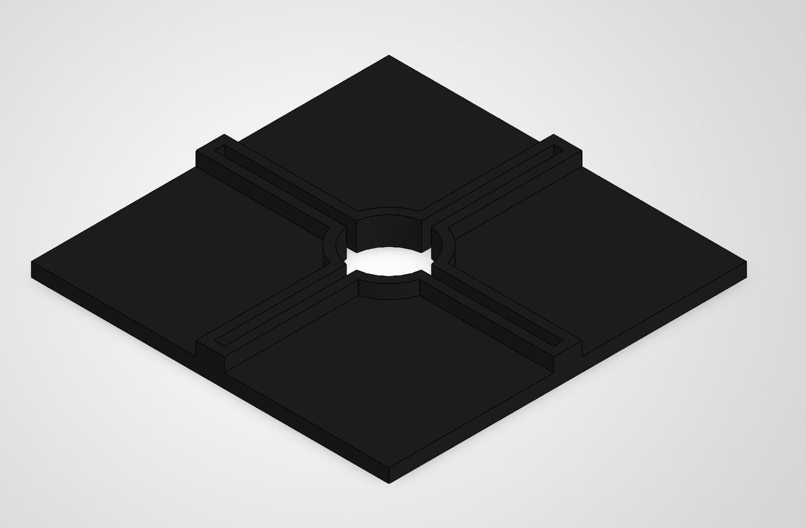
02 / Electromechanical integration
Designed and fabricated an electronics mounting assembly to accommodate onboard flight and tracking hardware within the available space.
This work combined mechanical CAD, component packaging and hands-on electronics integration. The CAD rendering and completed hardware illustrate the transition from concept to assembled hardware.
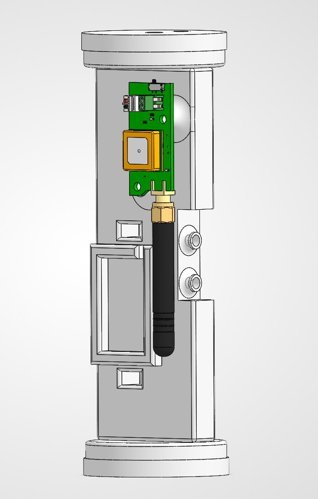
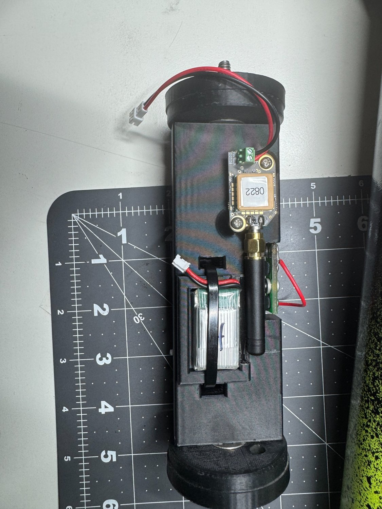
03 / Engineering analysis
OpenRocket was used to document and evaluate the two certification configurations prior to field testing. Simulation results provide a reference for post-flight analysis; they are distinct from measured flight results.
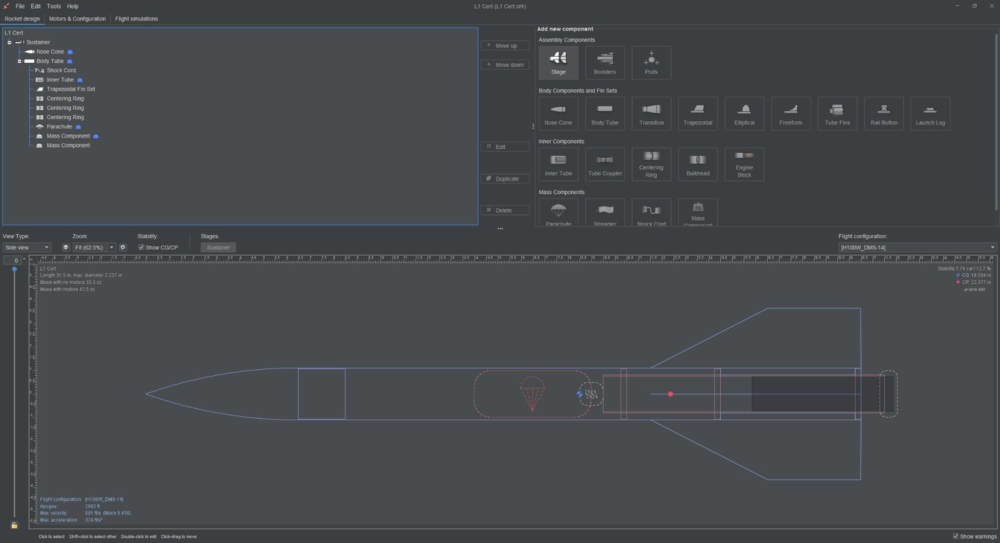
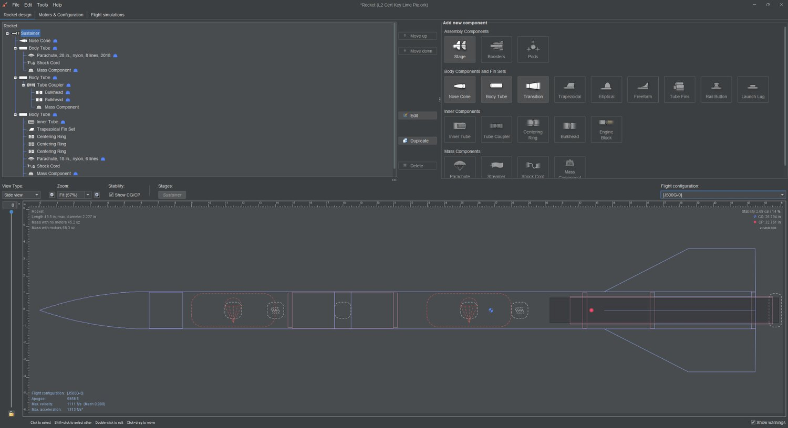
04 / Experimental validation
Both certification flights were completed successfully. The recorded Level 2 altitude trace provides an additional reference for interpreting flight performance.
| Metric | Level 1 | Level 2 |
|---|---|---|
| Certification | Obtained | Obtained |
| Flight altitude above launch | ~2,600 ft (reported) | ~6,800 ft (plot-derived estimate) |
| Peak displayed altitude | Not provided | ~9,000 ft |
| Peak speed | Not provided | ~Mach 1.2 (reported estimate) |
The Level 2 plot shows a preflight altitude of approximately 2,250 ft and a peak near 9,000 ft. Subtracting the preflight baseline gives an altitude gain of about 6,750 ft, consistent with the reported 6,800 ft flight altitude.
The altitude reference is not explicitly identified in the screenshot. The Mach 1.2 speed is my estimate and is not independently established by this plot.
Values are approximate readings from the supplied screenshot, not a raw telemetry export.
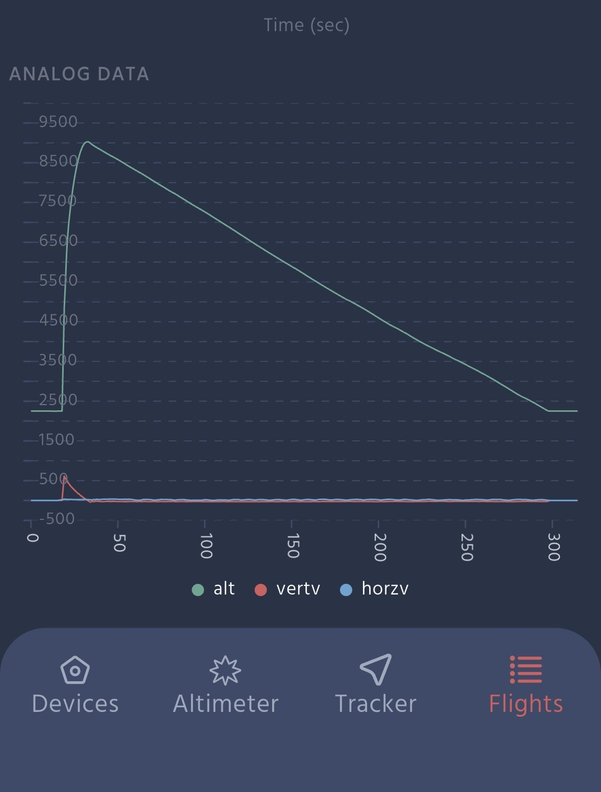
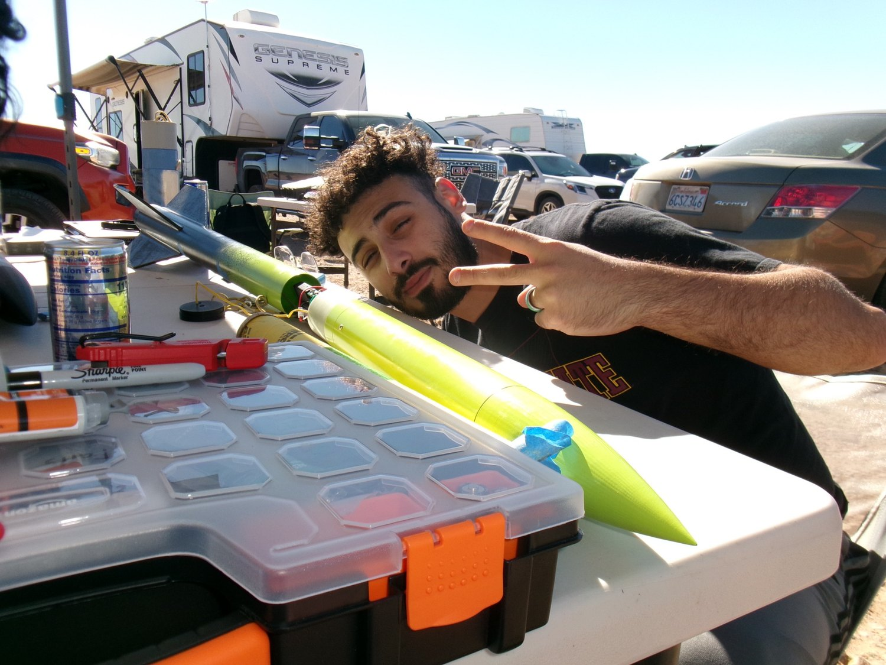
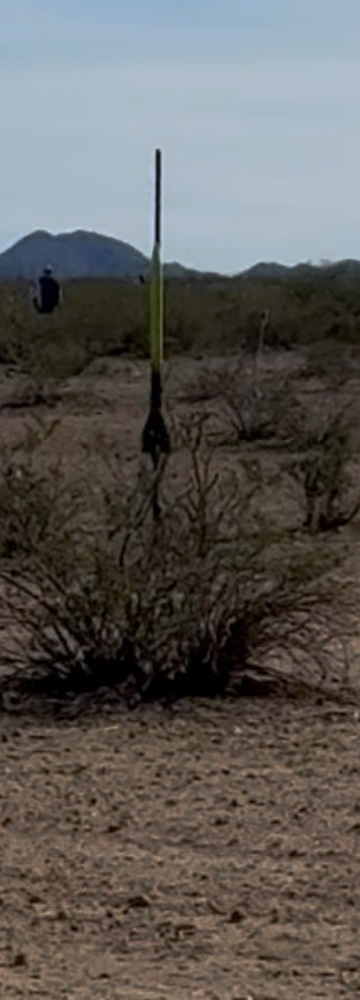
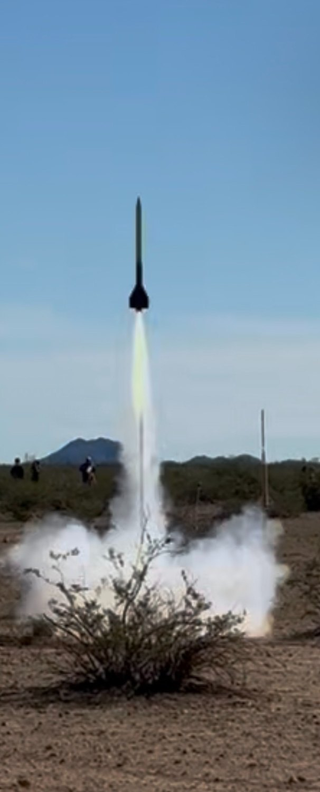
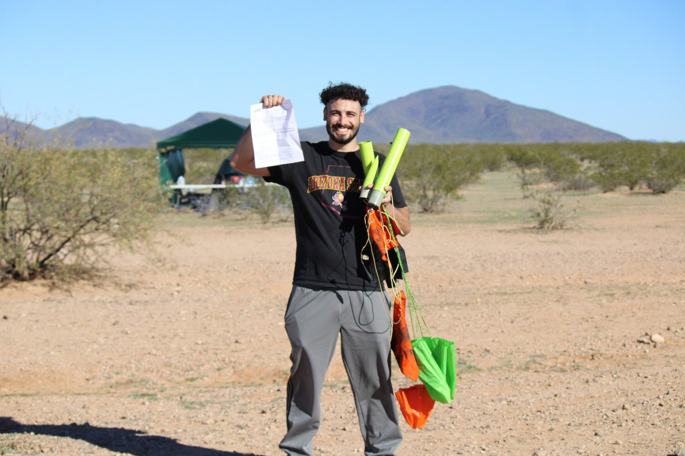
05 / Collaborative engineering
Sun Devil Rocketry · Student team project
As a member of Sun Devil Rocketry, I contributed to the mechanical design and manufacturing of Banana Split, a high-powered rocket developed through collaborative engineering. My work included composite body tube fabrication and hands-on support during the manufacturing and assembly process.
Working alongside other team members strengthened my understanding of composite materials, fabrication quality, engineering collaboration and the practical challenges of translating design concepts into physical hardware.
Banana Split was a team effort; the personal certifications and flight results above relate to Key Lime Pie.
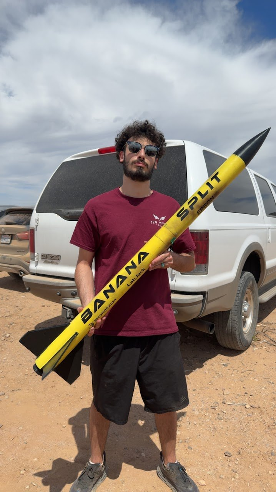
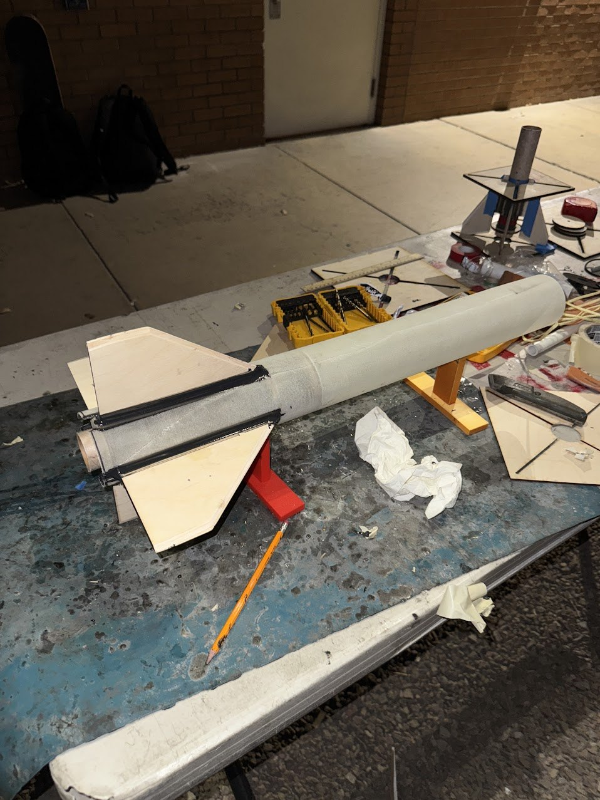
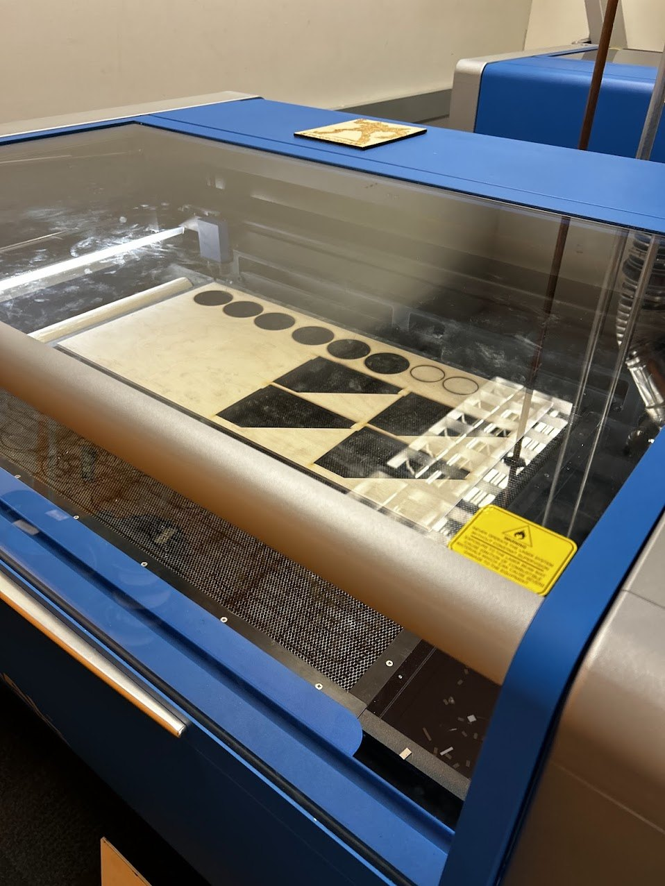
06 / Engineering takeaways
These projects demonstrate independent project ownership and collaborative manufacturing experience, with an emphasis on practical mechanical design, fabrication, electromechanical integration and the interpretation of real-world test data.